Centos7操作系统搭建Snipe-IT资产管理系统
一、介绍
Snipe-IT 是一个免费的开源IT资产管理web应用程序。是一款基于Laravel5.4的免费的开源IT资产管理系统。Snipe-IT用于IT资产管理，IT部门可通过它能够跟踪谁拥有哪些笔记本电脑，何时购买、包含哪些软件许可证和可用的附件等。
主要的功能特性：可托管在云主机、强大的REST API、快速更新、保证APP和Platform的安全性、一键备份、LDAP登录/用户同步。
二、环境准备
此时安装使用的系统如下：
1、操作系统：
Centos7.6： CentOS Linux release 7.6.1810 (Core)
2、Apache
此系统搭建使用的是 Apache2.4.6
3、PHP
此系统搭建使用的是 PHP7.2
4、数据库
此系统搭建使用的数据库版本是：Mariadb5.5.60
三、安装前准备
1、系统更新，在此用的系统是最小化安装的Centos7.6版本
1 | yum -y install epel-release |
2、使用yum安装Apache 2.4.6
1 | yum install -y httpd httpd-devel |
3、使用yum安装Mariadb 数据库
1 | yum install -y mariadb mariadb-server |
4、源码安装PHP、配置Apache支持
安装PHP所需要的依赖环境
1 | yum install -y make gcc wget openssl readline-devel openssl-devel libxslt-devel gmp-devel bzip2-devel freetype-devel libjpeg-devel php-mcrypt libmcrypt libmcrypt-devel autoconf freetype gd jpegsrc libmcrypt libpng libpng-devel libjpeg libxml2 libxml2-devel zlib curl curl-devel |
下载PHP安装包，并解压：
1 | cd /home |
对PHP7.2.3 进行源码编译安装：
1 | cd php-7.2.3 |
进行检查配置：
1 | ./configure --prefix=/usr/local/php7.2.3 --with-config-file-path=/etc --enable-fpm --enable-inline-optimization --disable-debug --disable-rpath --enable-shared --enable-soap --with-apxs2=/usr/sbin/apxs --with-libxml-dir --with-xmlrpc --with-openssl --with-mcrypt --with-mhash --with-pcre-regex --with-sqlite3 --with-zlib --enable-bcmath --with-iconv --with-bz2 --enable-calendar --with-curl --with-cdb --enable-dom --enable-exif --enable-fileinfo --enable-filter --with-pcre-dir --enable-ftp --with-gd --with-openssl-dir --with-jpeg-dir --with-png-dir --with-zlib-dir --with-freetype-dir --enable-gd-native-ttf --enable-gd-jis-conv --with-gettext --with-gmp --with-mhash --enable-json --enable-mbstring --enable-mbregex --enable-mbregex-backtrack --with-libmbfl --with-onig --enable-pdo --with-mysqli=mysqlnd --with-pdo-mysql=mysqlnd --with-zlib-dir --with-pdo-sqlite --with-readline --enable-session --enable-shmop --enable-simplexml --enable-sockets --enable-sysvmsg --enable-sysvsem --enable-sysvshm --enable-wddx --with-libxml-dir --with-xsl --enable-zip --enable-mysqlnd-compression-support --with-pear --enable-opcache |
（PS：此操作步骤大概检查一分钟左右，只要不出错，就一直执行，直到出现下面界面：）
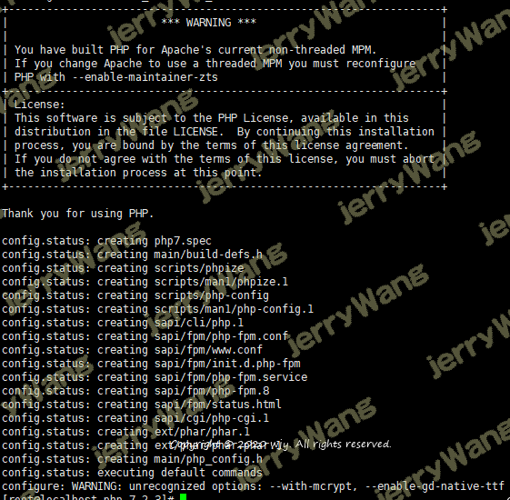
以上检查没有错误之后，下面就开始进行安装和编译了：
1 | make && make install |
(PS:此过程大概会持续三到五分钟左右，根据自己的设备性能决定，只要不报错，就等待自行安装，直至出现下面的界面：）

等待以上的安装完成后，下面需要配置php的环境变量：
1 | vim /etc/profile |
在该文件的最下面添加以下的信息：
1 | PATH=$PATH:/usr/local/php7.2.3/bin |
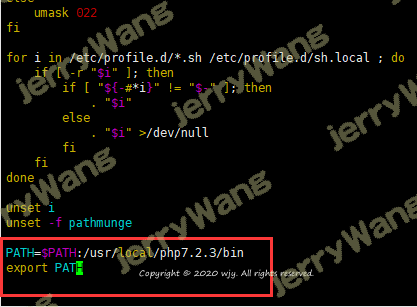
使其环境变量生效：
1 | source /etc/profile |
配置php-fpm,完成以下的操作：
1 | cd /home/php-7.2.3 |
启动 php-fpm
1 | service php-fpm start |
查看开启状态：
1 | lsof -i:9000 |
(PS:此次未安装lsof，可使用yum先安装lsof）
修改httpd.conf文件
1 | vim /etc/httpd/conf/httpd.conf |
需要修改的信息如下：
（1）在AddType application*后面加如下一行
1 | AddType application/x-httpd-php .php .phtml |
（2）在DirectoryIndex index.html加上index.php
1 | DirectoryIndex index.php index.html |
（3）确保httd.conf文件中包含以下字段，如不包含则加入此字段 （已存在，不存在需要加上）
1 | LoadModule php7_module /usr/lib64/httpd/modules/libphp7.so |
重启 httpd服务：
1 | service httpd restart |
检验httpd的PHP支持和版本信息：
1 | echo "<?php phpinfo(); ?>" >> /var/www/html/index.php |
重启服务和查看httpd状态：
1 | systemctl restart httpd |
浏览器输入服务器地址，检验PHP是否安装成功：
（PS：操作此步骤之前，需要关闭服务器的防火墙，或者添加一下命令：
1 | 1. firewall-cmd --permanent --zone=**public** --**add**-port=80/tcp |
四、安装Snipe-IT
1、初始化并创建snipeit数据库
1 | service mariadb start # 启动maraidb服务 |
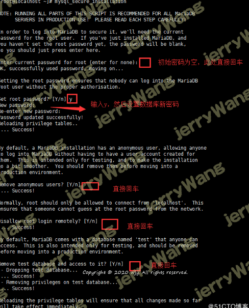
登陆数据库，创建对应用户及对应的数据库
1 | mysql -u root -p |
2、安装composer
什么是composer：
Composer 是由 Jordi Boggiano 和 Nils Aderman 创造的一个命令行工具，它的使命就是帮你为项目自动安装所依赖的开发包。Composer 中的很多理念都借鉴自 npm 和 Bundler，如果你对这两个工具有所了解的话，就会在 composer 中发现他们的身影。Composer 包含了一个依赖解析器，用来处理开发包之间复杂的依赖关系；另外，它还包含了下载器、安装器等有趣的东西。
下载并安装compose：
1 | cd |
3、安装snipeit
1 | cd /var/www |
编辑配置文件
1 | cd /var/www/snipe-it |
1 | APP_URL=192.168.201.102 #填入地址 |
其中
1 | 调试的时候请更改为true |
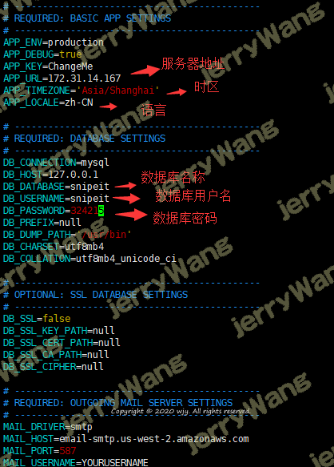
更改目录权限：
1 | nginx 的话请改为 自定义的用户 默认为 nginx |
使用composer安装PHP依赖
1 | composer install --no-dev --prefer-source |
（PS：正在安装中，此步骤安装时间会较长，请耐心等待。。。）
（中间可能会出现这样的一个错误，先不用理会，等待继续安装）
（PS：此过程安装了大概两个小时，终于安装成功了。出现以上界面）
如果安装时间过长，可以修改源之后重新安装尝试
1 | composer config -g repo.packagist composer [https://packagist.phpcomposer.com](https://packagist.phpcomposer.com/) |
生成 app_key
1 | php artisan key:generate |
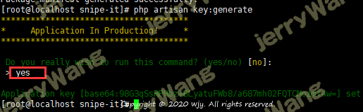
4、修改Apache配置文件，创建虚拟主机
1 | vim /etc/httpd/conf.d/snipeit.example.com.conf |
具体配置信息如下：
1 | <VirtualHost *:80> |
重启Apache 服务并查看Apache状态：
1 | systemctl restart httpd |
目前，Snipe-IT已经安装完成，就下来需要进行查错和安装前配置检查
四、排除及遇到的问题
1、关闭系统的selinux：
1 | vim /etc/sysconfig/selinux |
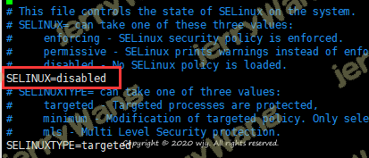
2、安装前检查报错
浏览器输入服务器IP地址：
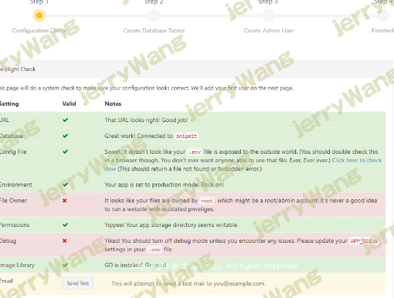
3、创建用户， 处理错误：
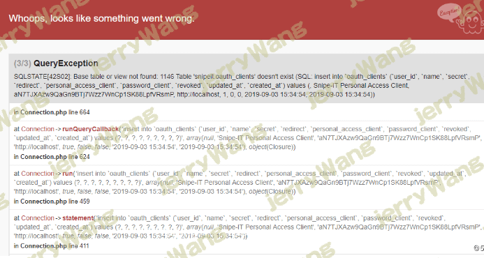
出现以上的错误，应该是数据库的问题，修改 .env 文件：
1 | cd /var/www/snipe-it |
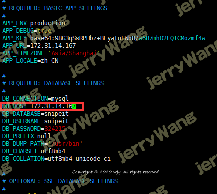
此篇文章的环境，数据库和服务器是安装再同一台服务器上，修改DB_HOST=172.31.14.167(服务器地址）
1 | systemctl restart mariadb # 重启maraidb服务 |
4、继续检查错误和创建用户
5、填写用户信息：

五、界面展示：
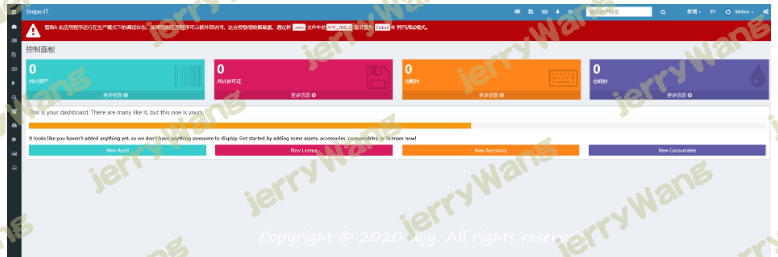
1、关闭调试模式：
1 | cd /var/www/snipe-it |
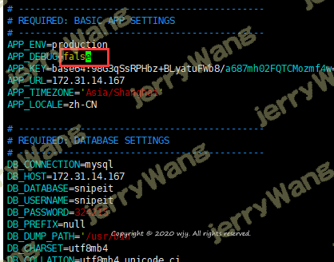
2、重启httpd服务
systemctl restart httpd
3、浏览器重新打开服务器地址：
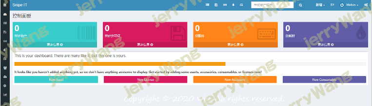
以上步骤已经将snipe-IT系统安装完成，已经能正常的显示为中文版本。
 微信
微信 支付宝
支付宝